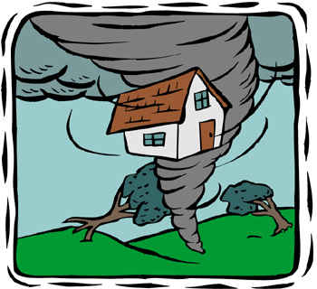

--- permalink: /404.html ---
<!doctype html>
<html lang="en-us">

<head>
  <meta charset="utf-8">
  <meta name="viewport" content="width=device-width, initial-scale=1">
  <title>404 Error Page</title>
  <meta name="author" content="Jeremy Hawks">
  <meta name="description" content="404 Error Missing Page">
  <!-- external style references in the proper cascading order -->
  <link href='https://fonts.googleapis.com/css?family=Archivo+Black|Arima+Madurai|Arsenal' rel='stylesheet'>
  <!-- Google API font reference -->
  <link href="styles/normalize.css" rel="stylesheet">
  <!-- normalize useragent/browser defaults -->
  <link href="styles/main.css" rel="stylesheet">
  <!-- default styles - small/phone views -->
  <link href="styles/medium.css" rel="stylesheet">
  <!-- medium/tablet views -->
  <link href="styles/large.css" rel="stylesheet">
  <!-- large/wide/desktop views -->
  <link rel="icon" type="image/ico" href="favicon.ico" />
</head>

<body>

  <header>

    <picture>
      <source media="(max-width: 760px)" srcset="images/L-FoggyHill-480x233.jpg">

      <source media="(max-width: 1200px)" srcset="images/L-FoggyHill-800x263.jpg">

      <source media="(min-width: 1200px)" srcset="images/L-FoggyHill-1746x571.jpg">

      
    </picture>

    <h1 id="error404">Oops! I think you may have got turned around in a storm!</h1>

    <div id="lost" class="subheading">The address you entered may have been blown away in a tornado!</div>
  </header>

  <!-- NAVIGATION -->
  <nav>
    <button onclick="toggleNavMenu()">&#9776;</button>
    <ul id="mainNav" class="hidden flex-container">
      <li><a href="assignments/weathersite/index.html">Home</a></li>
      <li><a href="assignments/weathersite/franklin.html">Franklin</a></li>
      <li><a href="assignments/weathersite/greenville.html">Greenville</a></li>
      <li><a href="assignments/weathersite/springfield.html">Springfield</a></li>
      <li><a href="assignments/weathersite/stormcenter.html">Storm Center</a></li>
      <li class="sixth"><a href="assignments/weathersite/gallery.html">Gallery</a></li>
    </ul>
  </nav>

  <!-- CONTENT -->
  <main>

    <div id="found" class="subheading2">Please use one of the links above to find it.</div>
    <picture id="tornadoHouse">
      <source media="(max-width: 760px)" srcset="images/TornadoHouse-350-320.jpg">

      <source media="(max-width: 1200px)" srcset="images/TornadoHouse-350-320.jpg">

      <source media="(min-width: 1200px)" srcset="images/TornadoHouse-350-320.jpg">

      
    </picture>
  </main>

  <!-- FOOTER -->

  <footer>
    <aside id="contactinfo">
      What Weather to Expect Outside<br> 123 Main St.<br> Franklin, MU 83454<br> (999) 999-9999<br> contact@outside-expectations.com
      <br>
    </aside>
    <p class="footer-bar">&copy;2018 All Rights Reserved | What Weather to Expect in Franklin | <span id="currentdate">Current Date Placeholder</span></p>
  </footer>

  <script src="scripts/hamburger.js"></script>
  <script src="scripts/currentdate.js"></script>

</body>

</html>
